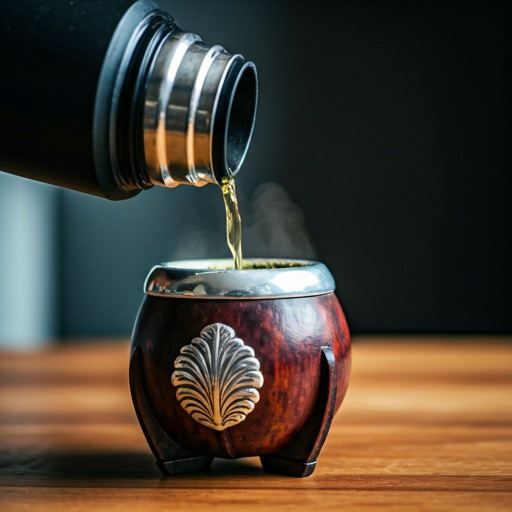
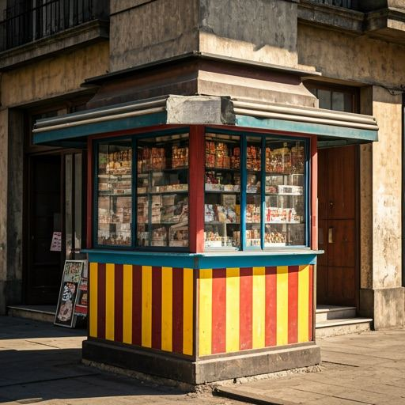

Try it · a real step
Finish the sentence
“Where are you from?”
¿Vos
de
dónde
Tap the word that finishes the question. In Buenos Aires it’s “vos sos”, not “tú eres”.
Rioplatense Spanish · Buenos Aires
Say vos like a local, hear the porteño “sh” in calle and yo, and get through a real day in the city — one hands-on 15-minute lesson at a time.
Sound on: tap the speech bubbles to hear Buenos Aires.
How it works
Every lesson is short enough for a coffee break and built from small, quick steps. No walls of grammar to scroll through — you learn by doing something every few seconds.
Try it · a real step
Finish the sentence
“Where are you from?”
Tap the word that finishes the question. In Buenos Aires it’s “vos sos”, not “tú eres”.
Pick the right word, form or reply — and see right away why.
Pair words with meanings, pictures and their porteño versions.
Put real phrases together tile by tile until word order feels natural.
Every line is voiced in Rioplatense Spanish, so your ear learns the rhythm and the “sh” of the Río de la Plata.
Order at a café, catch a bondi, chat with a neighbor — you answer, they reply.
Say it out loud and check your pronunciation, if you turn on speaking practice.
The story
A1 follows your first weeks in Buenos Aires across 60 lessons. Lucho finds your keys on the stairs, Marta adopts you with an alfajor at her kiosco, Rubén keeps track of you in his famous cuaderno, and before long you’re hosting an asado on the terraza. Every new word comes with someone to say it to. Tap a neighbor to hear them.
Unit 8 · Daily routines
It’s four in the afternoon. Rubén has been up since five. Sofi is just having breakfast.
Sofi, son las cuatro de la tarde. ¿Te levantás ahora?
Sofi, it’s four in the afternoon. Are you only getting up now?¡No, Rubén! Me levanto a la una. Desayuno, me ducho… ¡y ahora, la merienda!
No, Rubén! I get up at one. I have breakfast, I shower… and now, merienda!¡A la una! Yo me levanto a las cinco y barro la vereda todos los días.
At one! I get up at five and sweep the sidewalk every day.Y yo dibujo hasta las tres de la mañana. ¡Laburo a la noche!
And I draw until three in the morning. I work at night!¿Y quién tiene razón?
Mili, Rubén’s granddaughter: So who’s right?Your turn. Who’s right?
Very good! You’re a local now!
Oh, you’re just like Rubén!
Why Rioplatense
Rioplatense is the Spanish of Buenos Aires and Montevideo. It has its own pronouns, its own sound and its own words. El Recreo teaches it from lesson one, instead of patching it on later.
Porteños use vos with its own verb forms. You’ll learn them as the default.
In Buenos Aires, ll and y sound like the English “sh”. Linguists call it yeísmo rehilado.
Everyday expressions and a pinch of lunfardo, the city’s slang, with notes on when to use them.
Lessons are set where life in the city happens: sharing a mate, a Sunday asado, the corner kiosco, the colectivo across town. You pick up the language and the customs that come with it.


Banda sonora
Finish a unit and unlock a track from the Río de la Plata, picked for lyrics you can follow at that level. Then listen on Apple Music or Spotify.
Your path
Five levels, following the CEFR scale used by language schools and exams. A1 is complete: 10 units, 60 lessons, every line voiced. The next levels follow.
Greetings, numbers, shopping, getting around — your first days in the city.
Daily life and small talk: what you did, what you like, what you need.
Live on your own terms: sort out problems, tell stories, keep a conversation going.
Work, opinions and nuance — and the social codes behind them.
Humor, idioms and the culture between the lines.
Privacy-friendly by design
Open the app and start. No sign-up, no email, no password.
Progress stays on your devices and syncs through your own iCloud account.
Nothing between you and the lesson. Ever.
No third-party analytics or ad SDKs. Read the privacy policy.
El Recreo is on the App Store for iPhone and iPad, with a Mac version on its way, and the app in English, Русский, Português, Français and Deutsch. Questions or ideas? Write to us.